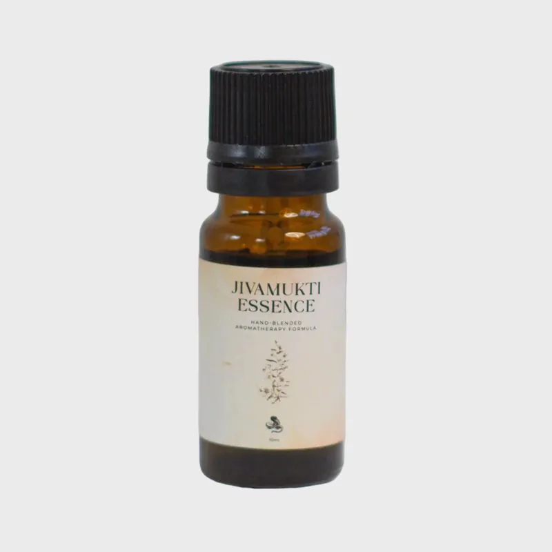
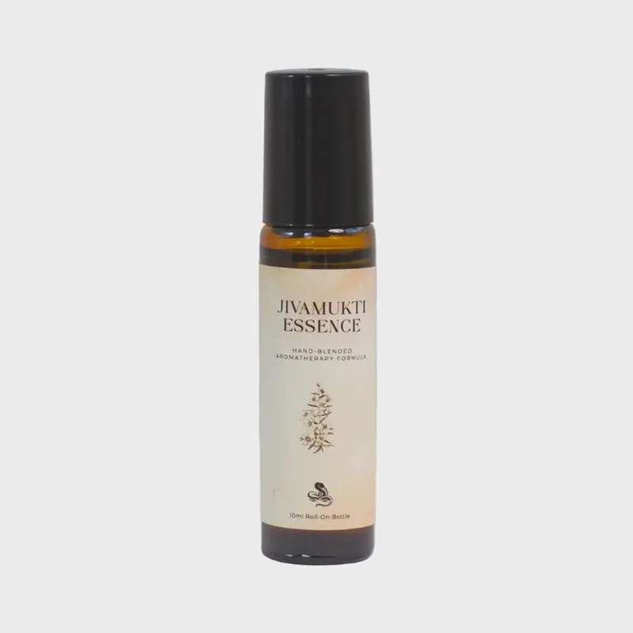

The Jivamukti Essence
a scent born on Crete
It began with a treatment
“I didn't know what to expect. I've never been in Greece before, I didn't know anything about Jivamukti either, but I just knew I had to go.”
In February 2022 I had the opportunity to join the Jivamukti ashram on the magical island of Crete. At that time I was already hungry for traveling and for having the chance of living in a community and in nature again.
Days were passing by, and I started to adapt myself to their rhythm and practices. Eventually I got to know all the team members, guests and teachers. Some of them had already been there for three months by the time I arrived, and yet welcomed me with such openness and kindness. In just a few days I was already feeling like I'm home and we all are a little family living in paradise during such chaotic times.
Most of the team had been working, volunteering, offering their help tirelessly. I had just learned a new massage technique and was developing my Anahata treatment, so I thought of offering a free treatment to the team, so they could also receive, since they give so much. I transformed one of the rooms into a pop-up therapy room, created a little altar, and began the treatments.
Emma Henry from London arrived during my first week in Triopetra to teach us her incredible yoga classes. She was the first person I offered my Anahata: a heart-opening holistic aromatherapy facial treatment.
Days and weeks were passing by and we were all so free, present and full of love. Our inner children were free to play and experience the joy of life again. It was just wonderful to feel once more the power of community, nature, holistic practices, aromatherapy and kindness, in an ashram where people are so open and vulnerable.
During the last week, Camilla Veen and Moritz Ulrich arrived to teach us and bless us with their angelic energy and immense knowledge. I offered them the Anahata treatment as well, of course, and they ended up booking a second session during their week.
The seed of the collaboration was planted by the angels during the second treatment with Camilla. We both felt like floating in the state of Samadhi, experiencing Ananda-bliss during the treatment.
I didn't necessarily know consciously what would come out of the whole experience, but I just felt it was the beginning of something more important and meaningful. Months passed and we all returned home to our normal lives, still carrying the high vibrations we created in togetherness.
A year later, when I finally got the clarity about the seed we planted, I sent a video message to Camilla explaining my idea of the Jivamukti x templeofsun aromatherapy collaboration. Her response was just as wonderful, kind and supporting as she is by nature.
“There's nothing to fear. Your bare, naked existence is pure love. You are fierce, radiant, powerful, but most importantly a compassionate light being.”The teaching that guided the alchemy

Twelve oils, one heart
fruity and spicy, earthy but ethereal
When I designed the formula I worked with Jivamukti's own words and translated them to the language of Mother Nature:
This alchemy process was beyond exciting, and the result is simply unexpected, surprising and mind-blowing to me. In the final recipe, twelve essential oils are blended together, representing the journey and philosophy of Jivamukti Yoga. I'm so proud of this formula and so grateful to share it. But mostly, I'm so excited for your journey with it.
The blend is light blue-green, representing Anahata, the centre of compassion, and it carries Shiva-consciousness energy: Lord Shiva's teachings gave me the main directions within the alchemy. There are sacred plants in the formula, giving you energetic protection as well.
Life is forever changing, so are you
and that is not just okay; it is inevitable and exciting
When you receive your formula, trust me, it will demand your attention. Sit down, add one or two drops into your palms, close your eyes, and start inhaling slowly and rhythmically, five to seven times. Just observe what it shows you, where it guides you, what it reveals about you that day.
The Jiva Essence will boost your internal processes and give you a kick whenever you feel stuck. It will support you gently when you are in your letting-go process, open up your playful side by reconnecting you with your inner child, or simply reassure you: yes, you got this. You have that raw power within you that enables you to stand tall and stable even in the wildest storms.
And when the storm hits you, it will also remind you that you are not alone. Yoga is about community, and life is so much better shared with others. Mother Nature always represents this aspect so well. There is a lot of movement happening energetically within the formula, and so there will be in you. The flowers in it will protect your heart and let you know that you are loved. Not in a romantic way; wildly.
While designing the Jiva Essence I worked a lot with the Chakra system: the twelve ingredients were chosen to touch and boost the entire energy body, kicking the engines in via Ajna, the third-eye centre.
Bottle or roll-on

Pure essential oil · 10mlThe concentrated blend
Highly concentrated, laboratory-tested essential oils; the highest quality you can get. Add one or two drops into your hands, mornings and evenings, rub your palms together and inhale the scent five to seven times, deeply and rhythmically, and let it guide you. Do the same right before meditation or yoga practice; teachers can offer it during savasana.
For your space, yoga studio or working environment: 8 to 12 drops in an aroma diffuser. Do not diffuse around children under 6 or people with sensitivity towards epilepsy.
Their shop · bottle
Roll-on · 10mlThe natural perfume
A subtle, less concentrated version of the mother blend, diluted with the golden queen of skin care: bio jojoba base oil, safe even on thin and sensitive skin. The ingredients are the same, but the alchemy follows botanical perfumery, so it functions as an ethereal, high-vibrational natural perfume. Roll it onto your pulse points, neck, wrists, the inner side of your ankles, and onto your heart.
Feel free to apply it onto your Chakra centres: work daily or weekly with different Chakras and observe what it reveals about your inner temple.
Their shop · roll-onThe ingredients are known to aid digestion, and using the blend regularly will help you digest life's every aspect. The oils also carry uplifting, harmonising qualities, and some of the plants are believed to boost circulation and support the heart and your emotional processes.
With care: never take any of the formulas internally. Do not use during pregnancy or in case of epilepsy. When using on the skin, do a sensitising test first with one drop on your wrist. The blend is phototoxic: keep treated skin out of direct sun and UV light for 8 hours. Use daily for three weeks, then keep one week of integration and clearing before restarting. Questions are always welcome; write to Peter.
A scent like this,
made for your people
The Jivamukti Essence began with one treatment and one friendship. Write a few lines about your space, and let's see what wants to be born.